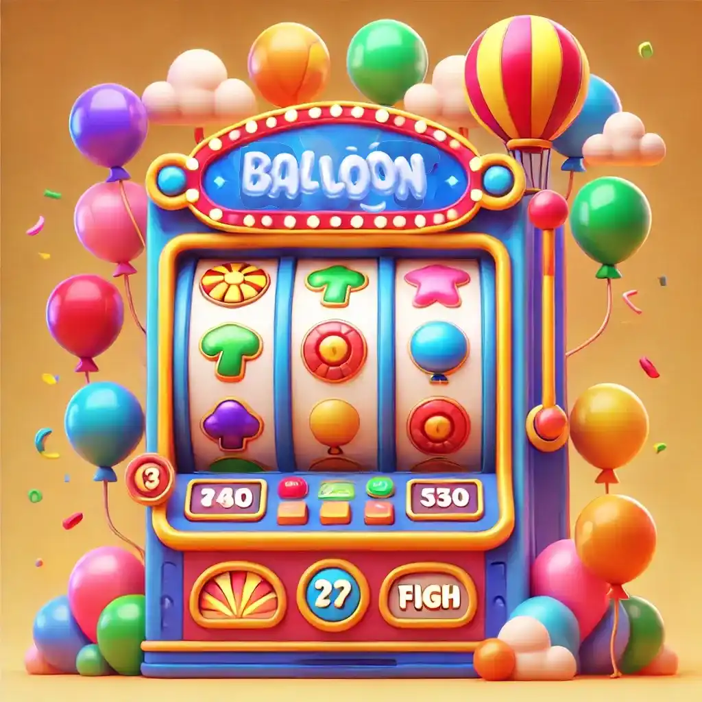
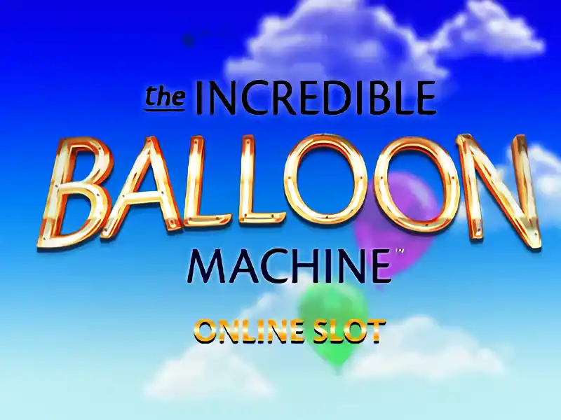

Balloon oyna: Oyuna Başlamak İçin Ayrıntılı Talimatlar
Balloon casino oyununa başlamadan önce Pin-Up'ta kayıt olmanız gerekir. Pin-Up sitesi, kullanıcılarına hızlı hesap oluşturma ve gerçek parayla kumar oyunlarına geçme fırsatı sunar. Bu sayede büyük ödülünüzü kazanabilirsiniz. Kayıttan sonra, casino'nun tüm özelliklerine erişebilirsiniz. Ancak bizi özellikle BALLOON slot oyunu ilgilendiriyor. Balloon'da bonus al

Balon oyunu için taktik ve strateji
-
Düşük Riskli Küçük Bahislerle Balloon Oyunu Stratejisi: Başlangıç Seviyesi İçin İdeal Taktik
Bu strateji, banka büyütmek ve aynı zamanda riskleri en aza indirmek isteyen yeni başlayanlar için idealdir. Küçük bahisler, uzun süre oyunda kalmanızı ve büyük mali kayıplara maruz kalmadan kademeli olarak kazançlarınızı artırmanızı sağlar. Balon patlatma bahis oyununda sakin kalmak ve bütçenizi takip etmek önemlidir. Böylece uzun süre oyunda kalabilirsiniz. -
Balloon Casino Oyununda Orta Bahis Taktikleri: Dengeli Kazançlar İçin Stratejiler
Bu taktik, balloon slot oyununda orta büyüklükte bahislerin seçilmesini içerir. Oyuncular, oyun oturumu için önceden banka büyüklüğünü belirlemelidir. Bu bütçeye uygun bahisler yapmak gerekmektedir. Orta çarpanlar elde edildiğinde kazançları sabitlemek, dengeli ve istikrarlı bir kazanç sağlamak için önerilir. Bu strateji, risk ve ödül arasında bir denge kurmanıza yardımcı olur. -
Balloon Casino Oyununda Büyük Bahislerle Oynamak: Yüksek Risk, Yüksek Kazanç Taktikleri
Bu strateji, daha deneyimli ve risk alan oyuncular için uygundur. Büyük miktarlarda bahisler yapılmasını içerir. Bu da büyük ödemelere yol açabilir, ancak kayıp riskini de artırır. Yüksek çarpanlara ulaşıldığında ödülleri toplamak, kazançlarınızı maksimize etmek için önemlidir.
Balon slot oyunu, bazı öneriler:
Seçtiğiniz stratejiden bağımsız olarak, demo modunda pratik yapmak önemlidir. Bu, kazançlarınızı nakde çevirmenin en uygun anını belirlemeyi ve balonun patlayacağı anı tahmin etme yeteneğinizi geliştirmenizi sağlar. Yeni başlayanlar için düşük bahislerle başlamak ve güven kazandıkça bahislerinizi kademeli olarak artırmak önerilir.

Oyun oturumu için net bir bütçe belirlemek önemlidir. Ayrılan banka büyüklüğünü aşmamak için buna sıkı sıkıya bağlı kalmak gerekmektedir. Ayrıca, oyunu sorumlu ve disiplinli bir şekilde oynamak da önemlidir. Kaybetmeye başlarsanız, oyuna ara vermeniz ve daha sonra, iyi bir ruh hali ile geri dönmeniz önerilir.
Balon kumarhanesi - sık sorulan sorular:
-
Balloon casino oyununda yeni başlayanlar hangi stratejiyi kullanmalı?
Yeni başlayanlar için en uygun strateji, küçük bahislerle ve düşük riskle oynamaktır. Bu strateji, oyunda uzun süre kalmayı ve büyük mali kayıplar yaşamadan kademeli olarak kazançları artırmayı sağlar. Küçük bahisler, oyun sürecine alışmayı ve risk yönetimini öğrenmeyi mümkün kılar. Bu, yeni başlayanlar için önemlidir. -
Balloon casino oyununda orta bahis kullanmanın avantajları nelerdir?
Orta bahisler, risk ve ödül arasında denge kurmanıza olanak tanır. Bu taktik, orta büyüklükte bahisler belirlemeyi içerir. Bu da istikrarlı bir banka büyüklüğünü sürdürmenize yardımcı olur. Orta çarpanlara ulaşıldığında kazançları sabitlenmek, büyük kayıplardan kaçınmayı sağlar. Aynı zamanda kazanç elde etme olasılığını korur. -
Balloon casino oyununda büyük bir kazanç elde ettiğinizde, oyunu ne zaman bırakmalısınız?
Büyük bir kazanç elde ettikten sonra, oyunu bırakmanız ve kazandığınız parayı çekmeniz tavsiye edilir. Bu, kazancınızı harcama cazibesinden kaçınmanıza yardımcı olur. Aynı zamanda gelecekteki olası kayıplardan korunmanıza da katkıda bulunur. Sorumlu bir şekilde oynamak önemlidir. Oyun oturumu için belirlenen bütçeye bağlı kalmak, uzun vadeli başarı şansınızı artırır.